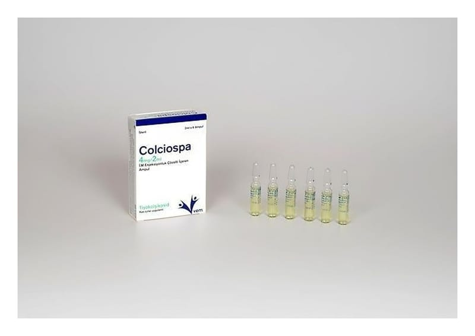

Colciospa 4 mg/2 ml IM Enjeksiyonluk Çözelti İçeren Ampul ,6 Adet

Ne için kullanılır
KT · Bölüm 1COLCİOSPA, 4 mg tiyokolşikosid etkin maddesini içerir. 2 ml'lik cam ampullerde, berrak, sarı renkli bir çözeltidir. Her kutuda 6 adet ampul vardır. COLCİOSPA esas olarak kas gevşetici etkinliğe sahiptir. COLCİOSPA, yetişkinlerde ve 16 yaştan itibaren ergenlerde ani ortaya çıkan omurilik kaynaklı ağrılı kas kasılmalarının tedavisinde kullanılır.